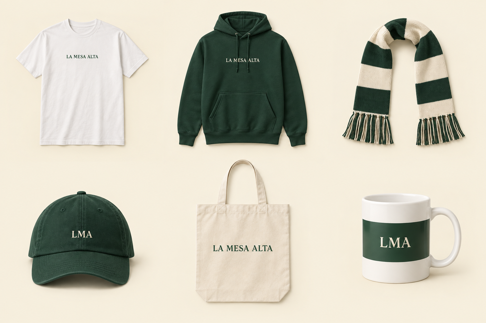

Ropa
Camiseta Original
22 €Corte recto unisex. Estampado frontal.
- Color
- Blanco · verde
- Tallas / medidas
- XS, S, M, L, XL, XXL
- Composición
- 100 % algodón · 180 g/m²
Detalles y cuidados +
Lavar del revés a 30 °C. No usar secadora.
Producto de muestra. Disponibilidad, precio final y recogida pendientes de confirmar.